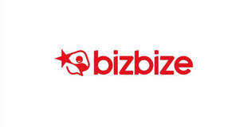

Trade Mark Journal No.2025/032 8 August 2025
UK00004239488 25 July 2025 (9,35,38,41,42,45)

- Class 9
- Mobile apps; Mobile application software; Application software for mobile phones; Smartphone software; Smartphone software applications, downloadable; Application software for mobile devices; Downloadable application software for smart phones; Computer application software for mobile phones; Mobile software; Application software for smart phones; Software and applications for mobile devices.
- Class 35
- Advertising; Advertising and marketing; Advertising and advertisement services; Advertising and marketing services; Advertising, promotional and marketing services; Advertising, marketing and promotional services; Marketing, advertising, and promotional services; Advertising and marketing consultancy; Advertising, marketing and promotion services; Marketing, advertising and promotion services; Promotional advertising services; Online advertising; Arrangement of advertising; Online advertising services; Consultancy services relating to advertising, publicity and marketing; Marketing; Advertising and marketing services provided by means of blogging; Business consulting; Business consultancy; Business networking; Business organisation; Business marketing consultancy; Consultancy (Professional business -); Business promotion; Business organisation consulting; Online advertisements; Advertising the goods and services of online vendors via a searchable online guide; Providing searchable online advertising guides; Online marketing; Online business networking services; Online community management services; Business networking services; Career networking services; Advertisement via mobile phone networks; Promoting the goods and services of others through advertisements on Internet websites; Compilation of advertisements for use as web pages on the Internet; Job matching services; Recruitment advertising; Digital marketing; Media relations services; Presentation of goods on communications media, for retail purposes.
- Class 38
- Telecommunications; Telecommunication; Telecommunications services; Mobile telecommunications services; Mobile telecommunications network services; Digital network telecommunications services; Mobile telecommunication network services; Providing online forums; Provision of on-line forums; Providing Internet chatrooms and Internet forums; Forums [chat rooms] for social networking; Providing access to Internet forums; Electronic exchange of messages via chat lines, chatrooms and Internet forums; Providing on-line forums for transmission of messages among computer users; Electronic communication by means of chatrooms, chat lines and Internet forums; Providing on-line chatrooms and electronic bulletin boards for transmission of messages amongst users; Providing online chatrooms for the transmission of messages, comments and multimedia content among users; Providing online chat rooms and electronic bulletin boards; Access to content, websites and portals; Providing access to Internet chatrooms; Chatroom services for social networking; Provision of access to content, websites and portals; Communication by online blogs; Providing access to platforms and portals on the Internet; Digital communication services; Digital communications services; Electronic communication services; Mobile communication; Wireless digital messaging services; Electronic network communications; Data communication services; Mobile media services in the nature of electronic transmission of entertainment media content.
- Class 41
- Writing services for blogs; Online publications, namely blogs; Publishing of educational material; Cultural activities; Educational information; Organisation and holding of fairs for cultural or educational purposes; Entertainment, sporting and cultural activities; Organisation of entertainment and cultural events.
- Class 42
- Programming of software for Internet portals, chatrooms, chat lines and Internet forums; Hosting online web facilities for others for conducting interactive discussions; Hosting online web facilities for others for sharing online content; Hosting of digital content, namely, on-line journals and blogs; Hosting multimedia educational content; Hosting multimedia entertainment content; Design and development of software for website development; Software development; Development of software; Development and design of mobile applications.
- Class 45
- Online social networking services; On-line social networking services; Online social networking services accessible by means of downloadable mobile applications; Internet-based social networking services.
BIZ BIZE UK LTD
Representative: Lal Ressamoglu